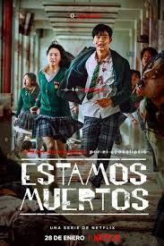
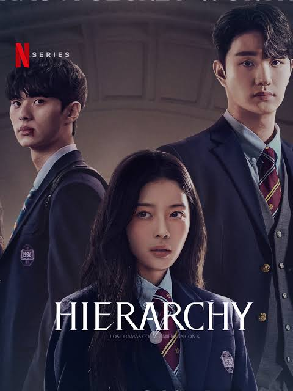
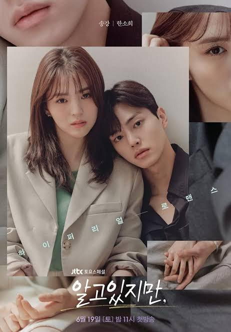
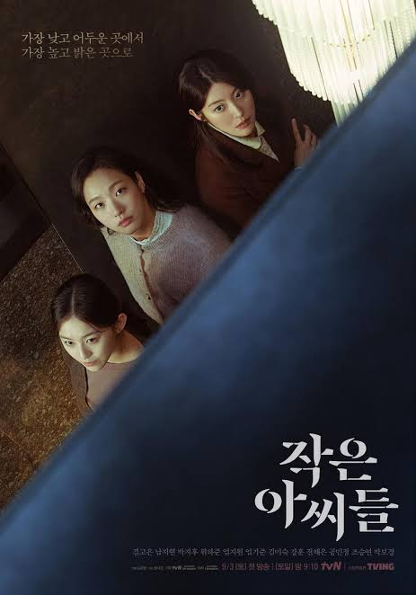
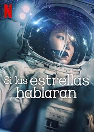
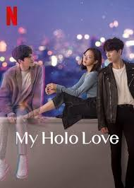
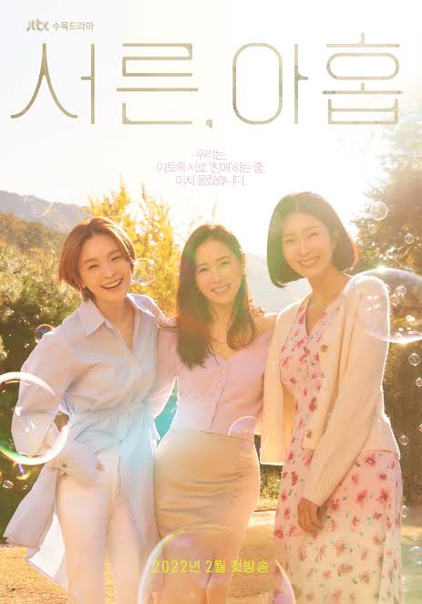

Las mejores series de dramas coreanas de los últimos años
1. Estamos muertos.
2. jerarquia.
3. Aun asi
4. Las hermanas.
5. Si las estrellas hablaran.
6. Holo mi amor.
7. treinta y nueve.
8. Doctores.

1. Estamos muertos.
2. jerarquia.
3. Aun asi
4. Las hermanas.
5. Si las estrellas hablaran.
6. Holo mi amor.
7. treinta y nueve.
8. Doctores.
Un grupo de estudiantes se da cuenta de que tienen que enfrentarse con las pocas existencias que tienen a una situación de crisis extrema.

El 0.01 % de los alumnos de la escuela Jooshin tiene el control de todo, pero un nuevo estudiante de intercambio bastante reservado podría abrir una grieta en ese mundo insondable.

El carisma embriagador de un compañero de clase muy ligón arrastra a una estudiante escéptica en lo tocante al amor a una relación de amistad con derecho a roce.


Una astronauta y un turista espacial de mundos totalmente opuestos y con objetivos distintos se encuentran en el espacio… y acaban enamorándose.

Una mujer solitaria descubre un amor inesperado al formar un vínculo con un holograma de aspecto humano idéntico a su creador.

Tres amigas incondicionales a punto de cumplir los 40 permanecen unidas en las buenas y en las malas mientras experimentan el amor y el duelo.
